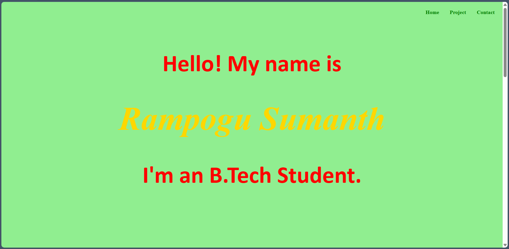

Hi! I’m Sumanth, currently pursuing my B. Tech in Computer Science and Engineering at G. Pullaiah College of Engineering and Technology, Kurnool, Andhra Pradesh.
My Technical skills include proficiency in programming languages like python and java, as well as front-end technologies such as HTML and CSS,and also SQL. I have foundational understanding of Data Structures and Algorithms.
Download my resume
Skills:
Languages : python(basics),java,data structures and algorithms
Front End : HTML,CSS
DataBase : SQL
Hobbies&Intrests
Besides my passion for coding, I love to play video games,and love to jog.On saturdays, you can find me watching Anime. I am a huge fan of Tony Stark. I will also draw in my free time. My favorite foods are butter chicken and biryani.
Projects:

Project title: portfolio
languages used: HTML, CSS Description:this webpage is my first project which is pretty simple and made by using html and css
Blogs
AICTE Internship
By author: Dec 7, 2023
I recently got the opportunity to complete a virtual internship provided AICTE on google platform on the mobile application development, which is started at september and ended on november 2023, Through the internship i gained a comprehensive understanding of mobile application development. the hands-on projects and real world scenarios provided a solid foundation in this crusial area of technology. The skills and knowledge i acquired from this internship have significantly enhanced my technical proficiency and have influenced me to explore further advancement in mobile application development.
Smart Interviews
By author: may 2, 2024
Embarking on the journey of mastering Data Structures and Algorithms (DSA) through the Smart Interviews platform, under the guidance of the exceptional instructor P. Raj manohar reddy, was an enriching and rewarding experience. This platform provided a structured and thorough approach to learning DSA, ensuring that each concept was well-understood and practically applied. It provided a fantastic and comprehensive learning experience that not only equipped me with essential DSA skills but also recognized my achievements along the way Ready to take on coding challenges with confidence